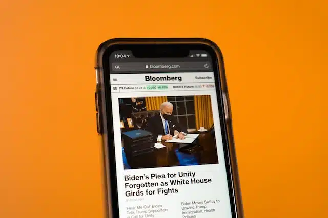

Last year a web development agency approached me for some SEO copywriting. Their client wanted to rank locally for a specific search term, but the writers they knew were reluctant to work with SEO software. I got the impression that the copywriters in question were print media specialists. It reminded me of the writers I’d overheard through the years. Those from more traditional settings. Marketing copy gets a bad rep for being low-brow anyway, but SEO seems to have suffered even more. That’s because to be discoverable, writers are having to increasingly embrace the skill, even beyond the marketing scene.
There are two problems I see commonly on the SEO issue. The first is that for creatives, the practice seems inhibitive and far removed from ‘the art of writing’. The second problem: there are many non-writers (like business owners) who appreciate the SEO mechanism. But they can be guilty of prizing it over the actual skill of writing. The reality is that to get the best results, we need to understand that one doesn’t exist without the other.
To be fair, SEO copywriting got a bad rep in the early days of its development. That’s because there was, and still is, so much awful content online. Meaningless articles stuffed with keywords, purely written to increase traffic. Many, sadly, still aren’t written with the reader’s needs in mind, or what they’ll feel when they consume the content. I’m haunted by some of the content that I’ve read on well-meaning websites that just wanted to have ‘something’ published. It’s a betrayal to potential customers though. It’s naïve to feed them garbage and expect them to bond with a business.
Google ranks good content
It’s for that reason that Google increasingly invests in its tech to reach its primary goal “to organise the world’s information and make it universally accessible and useful.” One of the ways they can be confident in serving the best material is to use the data they capture on how readers interact with your content. If readers hit your site and quickly leave (or ‘bounce’), it means they don’t see what they need. Google uses this data as a measurement tool. They know that users are the best judge when it comes to content. In the search process, users are far too busy to consume things that aren’t useful or well-written.
So while SEO is about meeting a number of factors, the principles increasingly based on the practice of good writing.
How is SEO copywriting different to other types of copy?
Copywriting has a long history, and has had an association with advertising since the 1400s when the first newspapers were printed. However as marketing practices get more advanced, we’re seeing a diversification in the types of writing that exist.
Copywriting: Broadly speaking, copywriting continues to be associated with sales. This covers things like advert text, landing pages, product descriptions, category descriptions, and even general website copy.
Content writing: We now also have content writers. Although still a marketing practice that sits within the sales chain, it specifically deals with relationship building. That is to either capture people during the research part of the buying journey, or to build on relationships with existing audiences (either customers or those who are engaged somehow). This covers things like blogs and articles (which are indeed two different types of media, a blog for another time perhaps), white papers, social media content, as well as website content like ‘about’ pages.
In both areas, you can get writers that specialise in these particular fields, and who further niche down into specific industries.
Most web content is SEO writing
Not every part of our content needs to be optimised, even Yoast says this. But when you think about it, which areas of the above wouldn’t benefit from optimisation?
SEO content writing, and SEO copywriting is simply the practice of ensuring that each piece of writing produced fits into your SEO strategy. That is to say that it’s:
- Written well
- Written with a true purpose (what is it for and who should it reach?)
- And that the keywords or phrases used both help you to be discovered, and add value to your overall aims.
Every time you produce something, you need to ask yourself where it fits into your strategy.
Other questions to ask: How else can you get mileage from it? (ie, can this be repurposed for anything else?) What are the mechanisms behind ensuring this content meets the appropriate people? That’s why almost all copywriting that lives online is essentially SEO copywriting. Even press releases and statements – PR related things – could be optimised to maximise their organic search potential.
Even news agencies recognise the power of SEO
It might be surprising to hear that big media groups with their already huge and engaged audiences still have search intent in mind. That’s because they still need to meet readers organically online. SEO expert Dan Smullen says that to do this, he doesn’t even bother to talk about Yoast or SEO with his journalist colleagues, as they’d quickly tune out.
Instead, he promotes the journalistic rules of ‘the five w’s to help them reach their SEO KPIs. Those are: who, what, when, where, and why (I’m going to throw in the ‘h’ there also: ‘how’). Those elements make up the keywords of the headline, along with any additional copy to pique reader interest. It’s so simple, but effective.
Some online media is not for everyone’s eyes
Smullen also makes a differentiation between online news and print news: “In print, you can immediately take in all that is around the headline, all the pictures, subheads… Search engines also don’t understand puns or the witty headline. They understand keywords.”
Now that’s a crucial point, because in print copy, there are other factors that are important – layout, headlines, images, how the entirety of the page looks. Print media pulls the eye around the page in a different way to how someone consumes media when they are scrolling or searching.
But some online media lives outside of the realms of search. Below are a few examples of digital copy where SEO isn’t a factor:
Landing pages for specific campaigns: You’ve nurtured an audience on a particular platform like Facebook or LinkedIn. You’ve niched this paid marketing campaign to them. Your final destination in the funnel is a landing page, targeted only to people who you’ve built a relationship with (ie, they’ve seen or interacted with previous adverts of yours, and this is the last stage in the funnel). Your landing page is offering something exclusive for these eyes only. Email marketing copy: This is usually to an engaged audience who’ve signed up to receieve information from you. Of course it’s hitting mail boxes, so you don’t need to be optimising here as there’s no search capacity for this copy.
Exclusive copy: subscriber-only material: There are times when you really are writing for member-only crowds. This could be exclusive content, things really only your niche subscribed audience need to know (like, a members only special offer, an event, or even the new director in your company).
The above elements may live online but it’s almost like print material. Because although it’s still on screen, it’s not content with any search potential. Where this differs from SEO content is that there’s room to be witty and playful with headlines. Remember Smullen’s point that search engines understand keywords, not wit – well here is where we have an overlap with traditional print, allowing the copywriter to have more fun.
Intelligence on search intent does intersect with non-SEO content
Even where we’re not optimising copy for actual key terms, intelligence in search intent is important. If you know what your market is looking for, it’s an opportunity to provide them with something useful. Using key terms in headlines for those non-SEO materials can help users quickly see what you can do for them. That’s particularly important in something like an advert, where people are scrolling. In such cases, you only have a few seconds to get their interest. So bear that in mind.
SEO doesn’t stop at one page, it’s an ongoing process
Non-marketers sometimes need a steer on what to expect from SEO, and how it works. For the most part, SEO is actually about good writing. But what it’s certainly not is optimising a single product page or a blog for a page one result. It’s also not something that happens overnight. And it isn’t just keywords or phrases. It’s not limited to the green lights on Yoast.
It requires research, planning and implementation. This process should have your business objectives in mind. You implement what you’ve learned from the last phase into each new stage. This helps you to build up your communications effectively for an organic search, and get that much desired authority with Google. It’s earned over time, and it’s a continuous process.
As Google prioritises user behaviour, us copywriters are happy that SEO is as much about delivering excellent penmanship. Those skills can be learned, but you can’t ignore them just because you installed Yoast on your website. Your copy needs to engage, entertain, persuade, inform, and convert. That’s all those good things that you need an experienced writer for.
What’s the use in a great search result if the copy doesn’t do its job at the end? Readers need to be captivated. SEO is the mechanism that delivers your content to the right eyes. Once they see it, the writing has it’s own work to do – it’s got to win hearts.
The balance of art and tech: SEO copywriting assimilates both, one can’t exist without the other
Lots of creatives into marketing because they love their art and can exploit their talent in an industry that needs it. But when the art hits the cross-section of technology, it can somehow appear reductive of their skill. But all the high-quality content we consume online is optimised. I’m not saying SEO is an infallible system, but it’s here and we have to work with it. We shouldn’t be afraid of it.
“Yoast is pedantic” is the best line I have ever read about the software. It is! And it’s hard enough with an editor, but at least you can talk to an editor, right? But we should remember that Yoast is a tool, not a writing software. It’s especially useful to quickly ensure that our writing meets all the requirements that will help it be found. We can focus on the art. Yoast assists us with some technical aspects that can suffer in the writing process.
To draw a comparison, my favourite thing about the five w’s is that Aristotle came up with them in Nicomachean Ethics, his most well-known work. The repurposing of these ancient principles are fascinating to me, showing how ancient concepts continue to live on in our modern lives. How they can even underpin our current technological situation.
It makes me wonder if technology ever really replaces the fundamental things that humans want to do. Perhaps it merely helps us to do those things with more ease? That’s also something to think about when SEO is concerned.